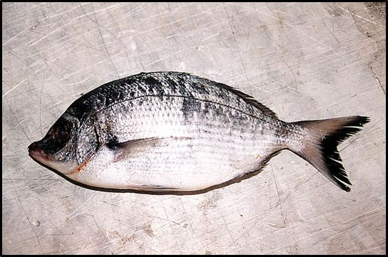
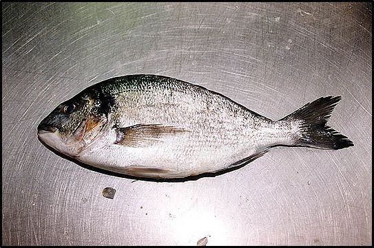
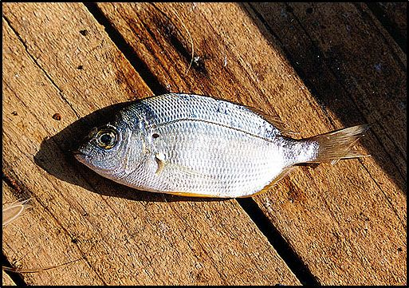

Μπακαλιάρος (Merluccius merluccius)
Ο μπακαλιάρος είναι ψάρι πελαγίσιο και το συναντάμε κυρίως σε βαθιά νερά, σε αμμώδεις πυθμένες μέχρι και 150 μέτρα βάθος. Τρέφεται με σαρδέλες, σαφρίδια κά. Φθάνει μέχρι 30 εκ. μήκος και βάρος έως δύο κιλά.
Πέρκα (Serranus scriba)
Η πέρκα είναι ένα όμορφο μικρό ψάρι. Συνήθως την συναντάμε γύρω από τους βράχους της ακτής, στις τρύπες, στους βραχώδεις βυθούς, στις φυκιάδες μαζί με τους γύλους, σε βάθος μέχρι και τα 20 μέτρα.
Ροφός (Epinephelus guaza)
Ο ροφός είναι μεγάλο πετρόψαρο που μπορεί να φτάσει μέχρι 50 κιλά βάρος, με ιδιαίτερα μεγάλο κεφάλι. Συνήθως είναι μοναχικός και κινείται γύρω από τις βραχώδεις ακτές, σε όλα τα βάθη, μέχρι και τα 300 μέτρα. Τρέφεται με μικρά ψάρια, καβούρια και χταπόδια.
Μαγιάτικο (Seriola dumerili)
Το μαγιάτικο είναι πελαγίσιο ψάρι. Πλησιάζει στις ακτές σε κοπάδι τον Μάιο. Είναι συγγενικό είδος με το σαφρίδι και έχει μικρά λέπια. Φτάνει σε μήκος τα 1,20 μέτρα.
Γύλος (Coris julis)
Ο γύλος είναι ένα μικρό στενόμακρο ψάρι, με λεπτά λέπια και φωτεινά χρώματα. Το συναντάμε συνήθως σε κοπάδια, στις βραχώδεις ακτές, στις φυκιάδες, καθώς επίσης και στις τραγάνες με τους χάνους, τις πέρκες και τα λιθρίνια. Φθάνει σε μήκος τα 25 εκ.
Μελανούρι (Oblana melanura)
Το μελανούρι μοιάζει με τον σπάρο και έχει μια σκούρα κηλίδα στην άκρη της ουράς. Τον συναντάμε σε κοπάδια σε βαθιά νερά, σε αμμουδερούς πυθμένες, κοντά σε βράχια όπου σπάνε τα κύματα. Φθάνει σε μήκος τα 20-30 εκ.
Ζαργάνα (Belone belone)
Η ζαργάνα είναι αφρόψαρο, στρογγυλό και μακρύ μέχρι μισό μέτρο, με πράσινη ραχοκοκαλιά. Το στόμα της καταλήγει σε ράμφος. Τρώει σπάρους, σαρδέλες και σκουλήκια, κινούμενη από την επιφάνεια μέχρι τον βυθό και μέχρι έξω στα ρηχά.
Σαργός (Diplodus sargus)
Το σαργό τον συναντάμε συνήθως στις βραχώδεις παραλίες στις απόκρημνες χαράδρες των βράχων, στις τρύπες στο βυθό, μέχρι και 25 μέτρα βάθος. Παρόλο που είναι σαρκοβόρο, τρέφεται και με φύκια, για τον λόγο αυτό, εγκαταλείπει συχνά τα βράχια και βγαίνει να αναζητήσει την τροφή του σε βυθούς με βλάστηση.
Σκαθάρι (Spondylosoma cantharus)
Το σκαθάρι μοιάζει αρκετά με τον σαργό. Το συναντάμε σε κοπάδια στα ανοιχτά, αλλά τον Απρίλιο και τον Μάιο έρχεται μέχρι τις ακτές. Φθάνει σε μήκος τα 50 εκ και βάρος τα 3 κιλά.
Συναγρίδα (Dentex dentex)
Η συναγρίδα φθάνει μέχρι το ένα μέτρο μήκος και τη συναντάμε σε κοπάδια μακρυά από τις ακτές, γύρω από τις ξέρες και τους υφάλους στο πέλαγος, ή σε τραγάνες σε βάθη 40 - 80 μέτρα. Τρώει οστρακοειδή, αθερίνα και άλλα μικρά ψάρια.
Τσιπούρα (Sparus aurata)
Την τσιπούρα τη συναντάμε σε κοπάδια το καλοκαίρι και μέχρι το φθινόπωρο, στα ρηχά, αλλά και στα βαθιά, μέχρι τα 80 μέτρα, στις αμμουδιές και τους βραχώδεις βυθούς, στους όρμους, στις ακτές με φύκια, καθώς και σε μικρά βραχάκια κάτω από το νερό. Συνήθως αναζητεί την τροφή το βράδυ, όμως πολλές φορές τη νύχτα κρύβεται σε τρύπες και πλησιάζει τις ακτές την ημέρα για να βρεί σκουλήκια, μύδια, κοχύλια και καβούρια. Γεννά την άνοιξη στις αμμουδιές της ακτής, ενώ μπορεί να μείνει όλο το χρόνο σε όρμους και μικρά λιμανάκια.
Φαγγρί (Pagrus pagrus)
Το φαγρί το συναντάμε σε βαθιά και καθαρά νερά στο ανοιχτό πέλαγος, σε πελαγίσιες ξέρες, σε βραχώδεις ακτές και υφάλους, σε βάθη από 20 μέχρι 200 μέτρα. Φτάνει σε μήκος τα 30-70 εκ. και σε βάρος μέχρι και 15 κιλά.
Σπάρος (Οικ. Sparidae)
Τους σπάρους τους συναντάμε στα ρηχά νερά με τους βραχώδεις βυθούς, μέσα στους όρμους και τις φυκιάδες. Από την άνοιξη κινούνται κοπαδιαστά προς τις ακτές και ξαναβγαίνουν τον Ιούνιο στα ανοιχτά για να γεννήσουν.
Γωβιός (Gobis gobitis)
Ο γωβιός είναι ένα μικρό ψάρι που το συναντάμε στις τρύπες των βράχων της ακτής, στις πέτρες της παραλίας, στους μαλακούς βυθούς με βλάστηση, σε βάθος από 1-50 μέτρα. Φθάνει τα 18 εκ σε μήκος και τρέφεται με σκουλήκι, μικρά ψάρια, και οστρακοειδή.
